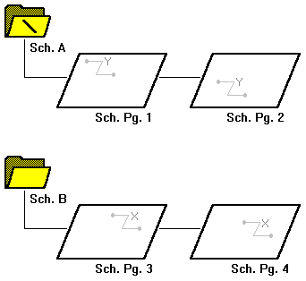
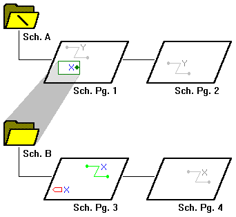
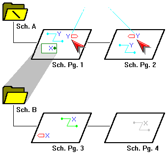
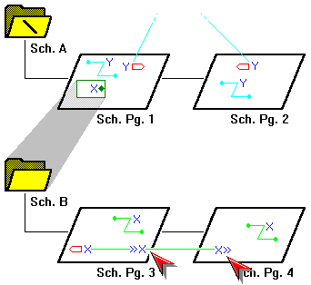
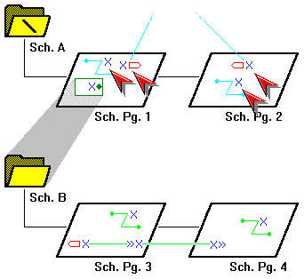
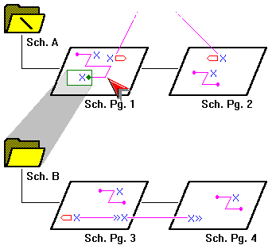

In Capture, you connect schematic
folders and schematic pages
by extending nets between them,
using off-page connectors, hierarchical blocks, and hierarchical ports. Off-page
connectors carry nets between schematic pages within a
single schematic folder. Hierarchical blocks and
hierarchical ports carry nets between schematic
folders.
A part with an attached schematic folder functions exactly
as described for hierarchical blocks, and pins on such a
part function exactly as described for hierarchical ports
within a hierarchical block. You can use the same attached
schematic folder for either method of defining a hierarchy.
The only difference between the two methods is that a part
with an attached schematic folder is easier to reuse. See
Creating parts and assigning
properties for related information.
If you choose the on a non-primitive part or
hierarchical block, and Capture cannot find the attached
schematic folder, Capture creates a schematic folder in the
active design.
|
|
The is restricted to the active schematic page—it does not follow hierarchical blocks, hierarchical ports, or off-page connectors across schematic folders or schematic pages. For more information, see Tracing a net. |
Remember that nets of a schematic page are electrically connected by name, by alias, or by connection to a named hierarchical port or off-page connector.
|
|
Capture preserves the case of part names and net names, but ignores the case when comparing names for electrical connection. That means you may use uppercase or lowercase letters as you wish, but you need not remember the case. |
When you attach a schematic to a part or a hierarchical
block, you can specify a full path and filename in the
Library text box. So, although you can specify a library
that has not been saved, you should not try to descend into
the attached schematic folder until the library that
contains the schematic folder has been saved.
If you do not specify a full path and filename in the
Library field, Capture expects to find the attached
schematic folder in the same design as the part of the
hierarchical block to which it is attached. If the specific
schematic folder does not exist in either the design or
library, Capture creates the schematic folder when you
descend the hierarchy on the part or hierarchical
block.
For compatibility with future versions of Windows, Capture
preserves the case of the path and file name as you specify
them in the Library field.
To extend a net across schematic pages within a single schematic folder
- Open the schematic page editor on a page that contains the net.
- From the Place menu, choose the Off-Page Connector command.
- Select a symbol and enter a name in the Name field; then click OK.
- Connect the off-page connector to the net, either by name or by wire.
- For each schematic page on which the net resides (and within the same schematic folder), repeat steps 1 through 4, using the same name for each off-page connector you place.
To extend a net through a hierarchy
- Open the schematic page editor on the parent page.
-
Place a hierarchical block, then assign a name to the
hierarchical block.
OR
Place a non-primitive part. - If necessary, attach a schematic folder to the hierarchical block or part.
- If you placed a hierarchical block in step 2, then from the Place menu, choose the Hierarchical Pin command and assign the pin a name.
- Open a schematic page in the attached schematic folder.
- Place a hierarchical port using the Hierarchical Port command with the same name of the hierarchical pin you used in step 4, then place wires to connect the hierarchical port to the net.
- Repeat steps 4 through 6 for each hierarchical pin in the hierarchical block, or for each pin on the part.
|
|
|
Attached files work much like their counterparts in email—they do not provide an alternative definition of the part (as do attached schematic folders).
Shortcuts
Tool palette: 


EXAMPLE

This figure shows two schematic folders, A and B, with two
schematic pages each. The schematic folder marked with a
backslash (\) is called the root schematic folder. In this
demonstration, you see how to create a simple hierarchy.
To establish the hierarchy with schematic folder A "above" schematic folder B:
- Place a hierarchical block on schematic page 1.
- Attach schematic folder B.

To carry a net between schematic folders A and B:
-
Select the hierarchical block on schematic page 1
and place a hierarchical pin named X inside it.
This hierarchical pin is a point of attachment for electrical connections between the hierarchical block and other objects on schematic page 1. -
Place a hierarchical port named X on schematic
page 3.
This hierarchical port is a point of attachment for electrical connections between schematic page 3 and other schematic pages. It is connected by name to the hierarchical pin inside the hierarchical block on schematic page 1.

Hierarchical ports generally carry a net "up"
through a hierarchy. In the root schematic folder, they
usually represent external signals such as physical
connectors on a PC board.
Note that hierarchical ports in schematic folder A
are electrically connected by name, so any like-named
connectivity objects on schematic pages 1 and 2 are part of
a single net named Y. You could make either one (but not
both) of these hierarchical ports an off-page connector
without affecting the electrical connections.

To connect the schematic pages in schematic folder B, place an off-page connector named X on both schematic pages 3 and 4. Any like-named connectivity objects on schematic pages 3 and 4 are part of a single net named X.

To connect the X and Y nets, it is not enough simply to rename one set of objects, as shown here. Again, the hierarchical pin does not bring the "green" net X out of the hierarchical block and onto the schematic page.

When you physically connect any part of the "blue" net X to the hierarchical pin inside the hierarchical block, the nets are joined.